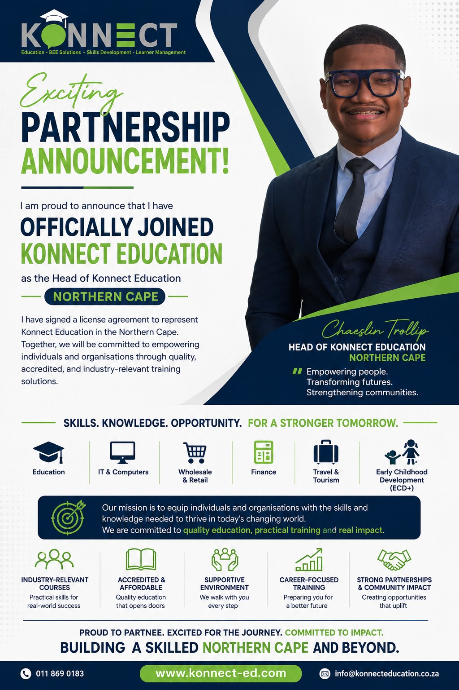

Practical skills. Real opportunity.
Chaeslin is the Head of Konnect Education for the Northern Cape, helping individuals and organisations access accredited training and skills development across a range of industries.
Education & Training.
Chaeslin serves as Head of Konnect Education for the Northern Cape, representing a licensed education and skills development provider active across business, IT, finance, early childhood development, wholesale and retail, and travel and tourism. The goal is straightforward: connect people and organisations with training that actually leads somewhere, not just another course on a list.

Fields we work across.
Programmes range from short skills courses to full accredited qualifications, spanning the industries below.
Get the full prospectus.
The Konnect Education prospectus covers every programme in detail, including entry requirements, duration and career outcomes.
Download Brochure